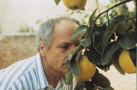

El sol del membrillo
The Quince Tree Sun
Víctor Erice – Spanien 1992
139 min – 35mm – span. OmeU
Sc: Víctor Erice, Antonio López – DoP: Javier Aguirresarobe, Ángel Luis Fernández – E: Juan Ignacio San Mateo – M: Pacal Gaigne – With Antonio López, María Moreno
FIPRESCI Award Cannes 1992, Best Film Chicago 1992
A film about the artistic process in every sense of the phrase, Spanish director Víctor Erice's EL SOL DEL MEMBRILLO loosely documents the efforts of artist Antonio López to paint the titular foliage in his backyard. López agonizes over just how to capture the light falling on the tree's leaves; he aspires to complete the painting before the fruit falls at the end of the season. Meanwhile, the artist is distracted by unannounced visitors, the debate over the Gulf War, and the filmmaker himself. SOL begins in documentary form, with voiceover narration from López himself, then slowly takes on other qualities: slightly staged narrative storytelling; hypnotic, dream-like nature film; and philosophical meditation on art and mortality.
sunday 11 oct 11.00 am theatiner filmkunst
Víctor Erice born in 1940 in Bizkaya, Spain. He studied law, political science, and economics at the University of Madrid. He also attended the Escuela Oficial de Cinematografia in 1963 to study film direction. He wrote film criticism and reviews for the Spanish film journal „Nuestro Cine“.
Films El espíritu de la colmena 1973 – El Sur 1983 – El sol del membrillo 1992